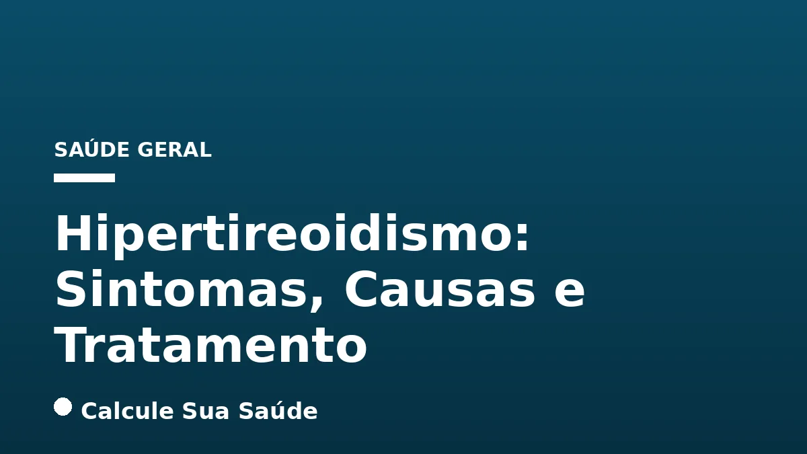

Aviso médico importante
Este conteúdo é educativo e informativo e não substitui a consulta, o diagnóstico ou o tratamento de um profissional de saúde. Em caso de sintomas, procure orientação médica.
Índice do Artigo
- 1. Introdução ao Hipertireoidismo: A Glândula Tireoide e o Metabolismo
- 2. Epidemiologia do Hipertireoidismo: Uma Visão Geral
- 3. A Doença de Graves: A Principal Causa do Hipertireoidismo
- 4. Nódulos Tireoidianos Tóxicos: Quando a Tireoide Age por Conta Própria
- 5. Outras Causas de Hipertireoidismo: Além da Doença de Graves
- 6. Fatores de Risco para o Desenvolvimento do Hipertireoidismo
- 7. Sintomas do Hipertireoidismo: O Corpo em Aceleração
- 8. Oftalmopatia de Graves: Um Olhar Atento aos Olhos
- 9. Hipertireoidismo em Populações Específicas: Idosos e Gravidez
- 10. Diagnóstico Preciso: A Chave para o Tratamento Adequado
- 11. Estratégias de Prevenção e Manejo do Iodo
- 12. Tratamento Medicamentoso: Controlando a Produção Hormonal
- 13. Radioiodoterapia (Iodo Radioativo): Uma Abordagem Definitiva
- 14. Cirurgia (Tireoidectomia): Quando a Intervenção é Necessária
- 15. Mitos e Realidades sobre o Hipertireoidismo
- 16. A Importância do Acompanhamento Médico Contínuo
- 17. Perguntas frequentes
A glândula tireoide, localizada na base do pescoço, desempenha um papel fundamental na regulação do metabolismo, produzindo hormônios essenciais como a triiodotironina (T3) e a tiroxina (T4). Quando essa glândula se torna hiperativa e libera hormônios em excesso na corrente sanguínea, o corpo entra em um estado de aceleração metabólica, caracterizando o que conhecemos como hipertireoidismo.
Essa condição, que afeta milhões de pessoas globalmente, pode impactar significativamente a qualidade de vida, manifestando-se através de uma ampla gama de sintomas que afetam desde o ritmo cardíaco até o humor e o peso corporal. Compreender o hipertireoidismo é o primeiro passo para um diagnóstico precoce e um tratamento eficaz, que visa restaurar o equilíbrio hormonal e prevenir complicações sérias.
Neste artigo aprofundado, exploraremos as causas subjacentes do hipertireoidismo, seus diversos sintomas, os métodos diagnósticos mais precisos e as opções de tratamento disponíveis, todas embasadas em evidências científicas. Nosso objetivo é fornecer informações claras e confiáveis para auxiliar na compreensão dessa condição complexa e na tomada de decisões informadas sobre a saúde da tireoide.
Em resumo
- O hipertireoidismo é a hiperatividade da tireoide, resultando em excesso de hormônios T3 e T4, que aceleram o metabolismo.
- A Doença de Graves, uma condição autoimune, é a causa mais comum, respondendo por 70% a 90% dos casos.
- Sintomas incluem taquicardia, perda de peso involuntária, nervosismo, tremores e intolerância ao calor.
- O diagnóstico é feito por exames de sangue (TSH baixo, T4/T3 elevados) e, se necessário, cintilografia e dosagem de anticorpos.
- As opções de tratamento incluem medicamentos antitireoidianos, iodo radioativo e cirurgia, escolhidas individualmente para cada paciente.
- O acompanhamento médico é crucial para gerenciar a condição, prevenir complicações e ajustar o tratamento conforme a necessidade.
1. Introdução ao Hipertireoidismo: A Glândula Tireoide e o Metabolismo
A glândula tireoide, uma pequena estrutura em forma de borboleta localizada na parte frontal do pescoço, é uma das mais importantes do sistema endócrino. Sua principal função é produzir e liberar hormônios tireoidianos, principalmente a triiodotironina (T3) e a tiroxina (T4), que são vitais para a regulação do metabolismo em praticamente todas as células do corpo. Esses hormônios influenciam desde a frequência cardíaca e a temperatura corporal até o peso, a produção de energia, o crescimento, a memória e o humor.
O hipertireoidismo ocorre quando a tireoide se torna hiperativa e produz hormônios em excesso. Essa superprodução leva a uma aceleração generalizada das funções corporais, resultando em uma série de sintomas característicos. É importante distinguir o hipertireoidismo de "tireotoxicose", um termo mais amplo que se refere a qualquer condição de excesso de hormônios tireoidianos no corpo, independentemente da causa, incluindo, por exemplo, a ingestão excessiva de hormônios sintéticos.
A regulação da tireoide é um processo complexo, controlado pela hipófise, uma pequena glândula no cérebro que produz o hormônio estimulante da tireoide (TSH). Em condições normais, o TSH estimula a tireoide a produzir T3 e T4. No hipertireoidismo, os altos níveis de T3 e T4 no sangue enviam um sinal de feedback negativo para a hipófise, que, por sua vez, reduz a produção de TSH, resultando em níveis de TSH geralmente baixos ou suprimidos.
2. Epidemiologia do Hipertireoidismo: Uma Visão Geral
O hipertireoidismo é uma condição endócrina relativamente comum, com estimativas globais sugerindo que cerca de 1% a 2% das pessoas desenvolverão a doença em algum momento de suas vidas. Nos Estados Unidos, por exemplo, aproximadamente 500 mil novos casos são diagnosticados anualmente, demonstrando a relevância da condição na saúde pública.
A incidência do hipertireoidismo apresenta uma clara diferença de gênero, sendo cerca de três a quatro vezes mais comum em mulheres do que em homens. A maioria dos casos costuma surgir entre a terceira e a quarta década de vida, ou a partir dos 30 anos, embora possa afetar pessoas de todas as idades. Essa prevalência em mulheres e em faixas etárias específicas sugere a influência de fatores genéticos, hormonais e autoimunes na manifestação da doença.
No contexto brasileiro, dados epidemiológicos específicos e atualizados sobre a prevalência ou incidência do hipertireoidismo são escassos nas fontes de alta autoridade priorizadas. No entanto, a observação clínica e a experiência dos profissionais de saúde indicam que a condição é igualmente relevante no país, exigindo atenção e estratégias de saúde pública para diagnóstico e tratamento adequados.
3. A Doença de Graves: A Principal Causa do Hipertireoidismo
A Doença de Graves é, de longe, a causa mais comum de hipertireoidismo, sendo responsável por 70% a 90% de todos os casos. Trata-se de uma doença autoimune, o que significa que o sistema imunológico do corpo, por engano, ataca a própria glândula tireoide. Nesse processo, o sistema imunológico produz anticorpos específicos, conhecidos como TRAb (Anticorpos Receptores de TSH) ou TSI (Imunoglobulinas Estimuladoras da Tireoide).
Esses anticorpos agem como o TSH, estimulando a tireoide a produzir e liberar hormônios tireoidianos em excesso, independentemente das necessidades do corpo. A Doença de Graves é frequentemente hereditária, o que sugere uma predisposição genética, e é mais comum em mulheres jovens, embora possa ocorrer em qualquer idade e em ambos os sexos. Além dos sintomas gerais de hipertireoidismo, a Doença de Graves pode apresentar manifestações únicas, como a oftalmopatia de Graves, que afeta os olhos, e, em casos raros, a dermopatia de Graves, que afeta a pele.
4. Nódulos Tireoidianos Tóxicos: Quando a Tireoide Age por Conta Própria
Além da Doença de Graves, os nódulos tireoidianos tóxicos representam uma causa significativa de hipertireoidismo. Nesses casos, um ou mais nódulos dentro da glândula tireoide desenvolvem autonomia, o que significa que começam a produzir e liberar hormônios tireoidianos em excesso, sem estarem sob o controle do TSH.
Bócio Uninodular Tóxico (Doença de Plummer)
O bócio uninodular tóxico, também conhecido como Doença de Plummer, corresponde a aproximadamente 5% dos casos de hipertireoidismo. Nesta condição, um único nódulo na tireoide se torna hiperfuncionante, agindo independentemente do controle hormonal do corpo. É mais comum em pessoas idosas, geralmente acima dos 60 anos, e pode se desenvolver lentamente ao longo do tempo.
Bócio Multinodular Tóxico (BMNT)
O bócio multinodular tóxico (BMNT) é responsável por cerca de 10% dos casos de hipertireoidismo. Como o nome sugere, múltiplos nódulos na tireoide se tornam autônomos e hiperativos. Assim como o bócio uninodular tóxico, o BMNT é mais prevalente em pessoas idosas e pode ser o resultado de anos de crescimento e desenvolvimento de nódulos na glândula.
A presença de nódulos tóxicos é frequentemente avaliada através de exames de imagem, como a ultrassonografia, e confirmada por uma cintilografia da tireoide, que pode identificar as áreas de hiperatividade.
5. Outras Causas de Hipertireoidismo: Além da Doença de Graves
Embora a Doença de Graves e os nódulos tóxicos sejam as causas mais comuns, outras condições podem levar ao hipertireoidismo:
Tireoidite
A tireoidite é uma inflamação da glândula tireoide que pode causar a liberação de hormônios tireoidianos armazenados, resultando em um hipertireoidismo temporário. Existem diferentes tipos:
- Tireoidite Subaguda Viral: Geralmente segue uma infecção viral e é caracterizada por dor na tireoide.
- Tireoidite Linfocítica Silenciosa: Semelhante à tireoidite pós-parto, mas não associada à gravidez, e geralmente indolor.
- Tireoidite Pós-parto: Ocorre em algumas mulheres após o parto, com uma fase inicial de hipertireoidismo seguida por hipotireoidismo.
- Tireoidite de Hashimoto: Embora seja a causa mais comum de hipotireoidismo, pode apresentar uma fase inicial de tireotoxicose devido à destruição das células tireoidianas e liberação de hormônios.
Uso Excessivo de Iodo
O iodo é um componente essencial para a produção de hormônios tireoidianos. No entanto, o consumo excessivo de iodo pode, em algumas pessoas, induzir ou agravar o hipertireoidismo. Isso pode ocorrer através de:
- Alimentos ricos em iodo.
- Medicamentos, como a amiodarona, usada para arritmias cardíacas, que contém grandes quantidades de iodo.
- Suplementos não regulamentados.
- Contrastes radiológicos utilizados em exames de imagem.
Ingestão Excessiva de Hormônio Tireoidiano
Pessoas em tratamento para hipotireoidismo que tomam doses excessivas de levotiroxina (hormônio tireoidiano sintético) podem desenvolver uma forma de hipertireoidismo induzida por medicação. O mesmo pode ocorrer com o uso de suplementos não regulamentados que contêm hormônios tireoidianos.
Adenoma Hipofisário Produtor de TSH (TSHoma)
Esta é uma causa extremamente rara de hipertireoidismo. Nesses casos, um tumor benigno na glândula hipófise (adenoma) produz TSH em excesso, que, por sua vez, estimula a tireoide a produzir mais hormônios T3 e T4. É importante diferenciar essa condição de outras causas de hipertireoidismo devido à sua raridade e abordagem de tratamento específica.
6. Fatores de Risco para o Desenvolvimento do Hipertireoidismo
Diversos fatores podem aumentar a probabilidade de uma pessoa desenvolver hipertireoidismo. Reconhecer esses fatores pode ser útil tanto para a prevenção, quando possível, quanto para a identificação precoce da condição:
- Histórico Familiar: A predisposição genética desempenha um papel significativo, especialmente na Doença de Graves. Ter parentes de primeiro grau (pais, irmãos, filhos) com Doença de Graves ou outras doenças da tireoide aumenta o risco.
- Gênero: O hipertireoidismo é notavelmente mais comum em mulheres do que em homens, com uma proporção de aproximadamente três a quatro mulheres para cada homem afetado. A maioria dos casos ocorre entre a terceira e a quarta década de vida, ou a partir dos 30 anos.
- Outras Doenças Autoimunes: Pessoas que já possuem outras condições autoimunes, como diabetes tipo 1, artrite reumatoide, lúpus ou anemia perniciosa, podem ter um risco aumentado de desenvolver doenças autoimunes da tireoide, incluindo a Doença de Graves.
- Tabagismo: Fumar é um fator de risco conhecido para a Doença de Graves e pode agravar a oftalmopatia de Graves.
- Estresse: Embora não seja uma causa direta, o estresse crônico pode, em algumas pessoas geneticamente predispostas, atuar como um gatilho para o desenvolvimento ou exacerbação de doenças autoimunes, incluindo a Doença de Graves.
- Consumo Excessivo de Iodo: Como mencionado, a ingestão excessiva de iodo, seja por dieta, suplementos ou medicamentos, pode desencadear ou piorar o hipertireoidismo em indivíduos suscetíveis, especialmente aqueles com nódulos tireoidianos preexistentes.
A presença de um ou mais desses fatores de risco não garante o desenvolvimento do hipertireoidismo, mas indica a necessidade de maior atenção aos sintomas e, em alguns casos, de monitoramento médico regular.
7. Sintomas do Hipertireoidismo: O Corpo em Aceleração
Os sintomas do hipertireoidismo são o resultado direto da aceleração do metabolismo do corpo e podem variar amplamente em intensidade de pessoa para pessoa. Em alguns casos, os sintomas podem ser sutis e se desenvolver gradualmente, enquanto em outros, podem ser mais pronunciados e aparecer de forma abrupta. É fundamental estar atento a esses sinais para buscar ajuda médica.
Sintomas Cardiovasculares
- Taquicardia: Aceleração dos batimentos cardíacos, frequentemente acima de 100 batimentos por minuto, mesmo em repouso.
- Palpitações: Sensação de que o coração está batendo forte, rápido ou de forma irregular.
- Arritmia: Irregularidade no ritmo cardíaco, que pode ser mais comum em pacientes com mais de 60 anos.
- Aumento da Pressão Arterial: Elevação da pressão sanguínea, especialmente a sistólica.
Para mais informações sobre a saúde cardiovascular, consulte nosso artigo sobre Hipertensão Arterial: Diretrizes e Manejo.
Sintomas Metabólicos
- Perda de Peso Involuntária: Perda de peso rápida e inexplicável, mesmo com aumento do apetite, devido ao metabolismo acelerado.
- Intolerância ao Calor e Sudorese Excessiva: Sensação constante de calor e transpiração abundante, mesmo em ambientes frescos.
Sintomas Neurológicos e Psicológicos
- Nervosismo e Ansiedade: Sensação de agitação, inquietação e preocupação excessiva.
- Irritabilidade: Mudanças de humor e fácil irritabilidade.
- Dificuldade para Dormir (Insônia): Problemas para iniciar ou manter o sono.
- Tremores nas Mãos: Tremores finos e involuntários, especialmente nas mãos.
Se você está experimentando ansiedade, pode ser útil ler sobre Ansiedade: Sintomas e Quando Procurar Ajuda. Para problemas de sono, nosso artigo Insônia: Causas, Tipos e Tratamento Sem Remédios pode oferecer insights. Se os sintomas psicológicos forem mais severos, considere também Depressão: Sintomas, Causas, Tipos e Tratamentos.
Sintomas Gastrointestinais
- Intestino Solto ou Evacuações Frequentes: Aumento da frequência das evacuações, por vezes com diarreia.
Sintomas Musculares e Ósseos
- Fraqueza Muscular: Especialmente nos braços e coxas, dificultando atividades como subir escadas.
- Perda de Cálcio dos Ossos: Aceleração da perda de cálcio, aumentando o risco de osteoporose e fraturas a longo prazo.
Outros Sintomas
- Bócio: Aumento do volume da tireoide, que pode ser visível ou palpável no pescoço.
- Alterações Menstruais: Irregularidades nos ciclos menstruais e aumento da probabilidade de aborto.
- Queda de Cabelo: Cabelos finos e quebradiços, com queda acentuada.
- Unhas Frágeis: Rápido crescimento das unhas com tendência à descamação.
- Pele Fina e Úmida: Pele com textura fina e constantemente úmida.
Em idosos, os sintomas podem ser atenuados, caracterizando o que é conhecido como hipertireoidismo apático, onde a perda de peso e a fraqueza podem ser os únicos sinais evidentes.
| Sistema Corporal | Sintomas Comuns do Hipertireoidismo |
|---|---|
| Cardiovascular | Taquicardia, palpitações, arritmia, aumento da pressão arterial |
| Metabólico | Perda de peso involuntária, aumento do apetite, intolerância ao calor, sudorese excessiva |
| Neurológico/Psicológico | Nervosismo, ansiedade, irritabilidade, insônia, tremores nas mãos |
| Gastrointestinal | Intestino solto, evacuações frequentes |
| Muscular/Ósseo | Fraqueza muscular, perda de cálcio ósseo (risco de osteoporose) |
| Outros | Bócio, alterações menstruais, queda de cabelo, unhas frágeis, pele fina e úmida |
8. Oftalmopatia de Graves: Um Olhar Atento aos Olhos
A oftalmopatia de Graves, também conhecida como orbitopatia de Graves, é uma complicação específica que afeta os olhos e ocorre em cerca de 30% a 40% dos pacientes com Doença de Graves. É uma condição autoimune distinta, onde os mesmos anticorpos que atacam a tireoide também afetam os tecidos ao redor dos olhos, incluindo os músculos oculares e a gordura orbital.
Os sintomas da oftalmopatia de Graves podem variar de leves a graves e incluem:
- Exoftalmia ou Proptose: Olhos protuberantes, que é o sinal mais característico.
- Inchaço ao Redor dos Olhos: Edema nas pálpebras e na região periorbital.
- Aumento do Lacrimejamento: Olhos lacrimejantes sem causa aparente.
- Irritação e Sensação de Areia nos Olhos: Desconforto ocular persistente.
- Sensibilidade à Luz (Fotofobia): Dificuldade em tolerar a luz brilhante.
- Visão Dupla (Diplopia): Dificuldade em focar, resultando em visão dupla.
- Dor Ocular: Dor ou pressão nos olhos.
Em casos mais severos, a oftalmopatia de Graves pode levar à compressão do nervo óptico, resultando em perda de visão. O tratamento dessa condição é complexo e pode envolver lubrificantes oculares, corticosteroides, radioterapia orbital ou, em casos extremos, cirurgia para descompressão da órbita. É crucial que pacientes com Doença de Graves sejam monitorados para o desenvolvimento de oftalmopatia, e que o tratamento seja coordenado entre endocrinologistas e oftalmologistas especializados.
9. Hipertireoidismo em Populações Específicas: Idosos e Gravidez
O hipertireoidismo pode se manifestar de maneiras diferentes em populações específicas, como idosos e mulheres grávidas, exigindo abordagens diagnósticas e terapêuticas adaptadas.
Hipertireoidismo em Idosos (Hipertireoidismo Apático)
Em pacientes com mais de 60 anos, o hipertireoidismo pode apresentar um quadro clínico atípico, conhecido como hipertireoidismo apático. Nesses casos, os sintomas clássicos de hiperatividade, como nervosismo e taquicardia, podem ser menos evidentes ou até ausentes. Em vez disso, os idosos podem manifestar sintomas mais inespecíficos, como:
- Perda de peso inexplicável.
- Fraqueza muscular progressiva.
- Fadiga e letargia.
- Depressão ou apatia.
- Arritmias cardíacas, como fibrilação atrial, que podem ser a única manifestação proeminente.
Devido à apresentação atípica, o diagnóstico em idosos pode ser mais desafiador e demorado, o que ressalta a importância de considerar o hipertireoidismo no diagnóstico diferencial de sintomas em pacientes mais velhos.
Hipertireoidismo na Gravidez
O hipertireoidismo na gravidez requer atenção especial devido aos riscos tanto para a mãe quanto para o feto. A condição pode aumentar a probabilidade de complicações como:
- Aumento do risco de aborto espontâneo.
- Parto prematuro.
- Pré-eclâmpsia.
- Insuficiência cardíaca materna.
- Restrição de crescimento fetal.
A causa mais comum de hipertireoidismo na gravidez é a Doença de Graves. O tratamento durante a gestação é complexo e geralmente envolve medicamentos antitireoidianos, como o propiltiouracil (PTU) no primeiro trimestre e o metimazol nos trimestres seguintes, com doses cuidadosamente ajustadas para minimizar os riscos para o feto. O acompanhamento rigoroso por uma equipe multidisciplinar é essencial.
10. Diagnóstico Preciso: A Chave para o Tratamento Adequado
O diagnóstico do hipertireoidismo é um processo multifacetado que combina a avaliação clínica do paciente com exames laboratoriais e, em alguns casos, de imagem. Um diagnóstico preciso é crucial para determinar a causa subjacente e guiar a escolha do tratamento mais eficaz.
Avaliação Clínica e Exame Físico
O processo diagnóstico começa com uma anamnese detalhada, onde o médico coleta informações sobre os sintomas relatados pelo paciente, seu histórico médico pessoal e familiar, e a presença de quaisquer fatores de risco. Durante o exame físico, o médico pode procurar sinais como taquicardia, tremores, pele úmida e, especialmente, o bócio (aumento da glândula tireoide), que pode ser visível ou palpável no pescoço.
Exames de Sangue
Os exames de sangue são a ferramenta mais importante para confirmar o diagnóstico de hipertireoidismo e avaliar a função tireoidiana:
- TSH (Hormônio Estimulante da Tireoide): No hipertireoidismo, os níveis de TSH geralmente estão baixos ou suprimidos devido ao feedback negativo dos hormônios tireoidianos em excesso.
- T4 Livre (Tiroxina Livre) e T3 (Triiodotironina): Níveis elevados de T4 Livre e/ou T3 confirmam o diagnóstico de hipertireoidismo. O T4 livre é preferido ao T4 total por ser a fração ativa do hormônio e menos suscetível a variações por proteínas de ligação.
Para entender melhor os valores de referência e o papel desses hormônios, você pode consultar nosso artigo sobre Hipotireoidismo: TSH, T3, T4 e Diagnóstico.
Dosagem de Anticorpos
Para identificar a causa autoimune do hipertireoidismo, como na Doença de Graves, a dosagem de anticorpos específicos é realizada:
- TRAb (Anticorpos Receptores de TSH): A presença desses anticorpos é um forte indicativo de Doença de Graves, pois eles estimulam a tireoide a produzir hormônios em excesso.
- TSI (Imunoglobulinas Estimuladoras da Tireoide): Também são marcadores da Doença de Graves.
Exames de Imagem
- Ultrassonografia com Doppler da Tireoide: Este exame avalia o tamanho, a textura e o fluxo sanguíneo da glândula. É útil para identificar a presença de nódulos, determinar o tamanho do bócio e verificar características que podem sugerir malignidade. Não é indicada para o diagnóstico inicial de hipertireoidismo sem nódulo palpável.
- Cintilografia da Tireoide e Captação de Iodo Radioativo: Esses exames são cruciais para determinar a causa do hipertireoidismo. A cintilografia mostra como a tireoide capta o iodo. Em casos de Doença de Graves, a captação é difusa e elevada em toda a glândula. Em nódulos tóxicos, a captação é localizada nas áreas hiperativas, enquanto o restante da glândula pode estar suprimido. Na tireoidite, a captação de iodo é geralmente baixa, pois os hormônios estão sendo liberados de forma passiva por inflamação.
A combinação desses métodos diagnósticos permite ao médico estabelecer um diagnóstico preciso e iniciar o plano de tratamento mais adequado para cada paciente.
11. Estratégias de Prevenção e Manejo do Iodo
A prevenção do hipertireoidismo, especialmente da Doença de Graves que é de origem autoimune, não é diretamente possível. No entanto, algumas medidas podem ajudar a prevenir formas específicas da condição ou a gerenciar fatores de risco:
- Controle do Consumo de Iodo: Evitar o consumo excessivo de iodo é uma estratégia importante. Embora o iodo seja essencial para a função tireoidiana, o excesso pode desencadear ou agravar o hipertireoidismo em indivíduos suscetíveis, especialmente aqueles com nódulos tireoidianos preexistentes ou que vivem em áreas com deficiência de iodo e são expostos a grandes quantidades de uma só vez. Isso inclui ter cautela com suplementos que contêm iodo, medicamentos como a amiodarona e contrastes radiológicos, sempre sob orientação médica.
- Adesão à Dosagem de Hormônio Tireoidiano: Para pacientes em tratamento de hipotireoidismo que utilizam levotiroxina, é fundamental seguir rigorosamente a dosagem prescrita pelo médico. A superdosagem pode levar a um hipertireoidismo iatrogênico, ou seja, induzido por medicação. O monitoramento regular dos níveis hormonais é essencial para garantir que a dose seja adequada.
- Gerenciamento de Doenças Autoimunes: Embora não previna a Doença de Graves, o gerenciamento adequado de outras doenças autoimunes pode contribuir para a saúde geral e, potencialmente, reduzir o risco de desenvolvimento de novas condições autoimunes.
- Evitar o Tabagismo: O tabagismo é um fator de risco conhecido para a Doença de Graves e pode exacerbar a oftalmopatia de Graves. Parar de fumar é uma medida preventiva importante para a saúde da tireoide e geral.
É crucial ressaltar que estas são medidas de gerenciamento e não garantem a prevenção total do hipertireoidismo, especialmente em casos de predisposição genética ou doenças autoimunes. O acompanhamento médico regular é sempre a melhor forma de monitorar a saúde da tireoide.
12. Tratamento Medicamentoso: Controlando a Produção Hormonal
O tratamento medicamentoso é frequentemente a primeira linha de abordagem para o hipertireoidismo, visando reduzir a produção excessiva de hormônios tireoidianos e aliviar os sintomas. A escolha do medicamento e a duração do tratamento são individualizadas, considerando a causa, a gravidade da doença, a idade do paciente e outras condições de saúde.
Medicamentos Antitireoidianos (DAT)
Os medicamentos antitireoidianos (DAT) são a base do tratamento para muitos pacientes. Os mais comuns são o metimazol (Tapazol) e o propiltiouracil (PTU).
- Mecanismo de Ação: Essas drogas atuam bloqueando a produção de hormônios tireoidianos pela glândula. O metimazol é geralmente preferido devido ao seu perfil de segurança mais favorável e menor frequência de dosagem. O PTU é reservado para situações específicas, como o primeiro trimestre da gravidez (devido a um menor risco de malformações congênitas nessa fase) ou em casos de crise tireotóxica.
- Eficácia e Duração: Os DATs geralmente começam a mostrar efeito em cerca de duas semanas, e o controle completo do quadro pode levar aproximadamente dez semanas. Na Doença de Graves, o tratamento pode durar de seis meses a dois anos, com o objetivo de induzir a remissão da doença e restaurar o eutireoidismo (função normal da tireoide).
- Nível de Evidência e Efeitos Colaterais: São o tratamento de primeira escolha para muitos pacientes, especialmente aqueles com doença leve, bócios pequenos, crianças, adolescentes e mulheres grávidas. Podem causar reações alérgicas em cerca de 5% dos pacientes, como erupções cutâneas e coceira. Efeitos colaterais mais graves, embora raros, incluem agranulocitose (diminuição grave de glóbulos brancos) e hepatotoxicidade (dano ao fígado), especialmente com o PTU.
Betabloqueadores
Medicamentos como o propranolol ou metoprolol são frequentemente utilizados no início do tratamento do hipertireoidismo, mas não atuam diretamente na tireoide.
- Mecanismo de Ação: Eles ajudam a controlar os sintomas adrenérgicos do hipertireoidismo, como palpitações, taquicardia, tremores, nervosismo e ansiedade. Ao bloquear os efeitos da adrenalina no corpo, proporcionam alívio rápido desses sintomas enquanto a terapia definitiva com DATs ou outras abordagens começa a fazer efeito.
- Nível de Evidência: São muito úteis para melhorar a qualidade de vida do paciente no período inicial do diagnóstico e tratamento, mas não tratam a causa subjacente do hipertireoidismo.
O acompanhamento médico regular com exames de sangue é essencial durante o tratamento medicamentoso para ajustar as doses e monitorar a resposta e os possíveis efeitos adversos.
13. Radioiodoterapia (Iodo Radioativo): Uma Abordagem Definitiva
A radioiodoterapia, que utiliza iodo radioativo (I-131), é uma das opções de tratamento mais comuns e eficazes para o hipertireoidismo, frequentemente considerada uma terapia definitiva.
Mecanismo de Ação
O tratamento consiste na ingestão de uma cápsula ou líquido contendo iodo radioativo (I-131). A glândula tireoide tem a capacidade única de captar seletivamente o iodo do sangue para produzir seus hormônios. Ao ingerir o I-131, a tireoide absorve o iodo radioativo, que então emite radiação beta de curto alcance. Essa radiação danifica ou destrói as células tireoidianas hiperativas, reduzindo a produção hormonal.
Eficácia e Indicações
A radioiodoterapia é um tratamento seguro e altamente eficaz, especialmente para a Doença de Graves e para nódulos tireoidianos tóxicos (uninodular ou multinodular). Em mais de 90% das pessoas que escolhem essa opção, o hipertireoidismo é permanentemente controlado. Os efeitos do tratamento podem demorar de 3 a 12 dias para começar a aparecer, com os resultados completos sendo avaliados em cerca de seis semanas.
É uma excelente opção quando os medicamentos antitireoidianos não são suficientes, causam efeitos colaterais intoleráveis, ou quando o paciente prefere uma solução definitiva. No entanto, é contraindicada em mulheres grávidas ou amamentando, e geralmente não é a primeira escolha para crianças pequenas.
Preparo e Pós-tratamento
O preparo para a radioiodoterapia geralmente envolve uma dieta pobre em iodo e a interrupção de medicamentos com iodo por pelo menos 30 dias antes do tratamento, para maximizar a captação do iodo radioativo pela tireoide. Após o tratamento, é comum que o paciente desenvolva hipotireoidismo permanente, necessitando de reposição hormonal com levotiroxina pelo resto da vida. Este é um resultado esperado e gerenciável, pois o hipotireoidismo é mais fácil de controlar do que o hipertireoidismo.
14. Cirurgia (Tireoidectomia): Quando a Intervenção é Necessária
A cirurgia para remover a glândula tireoide, conhecida como tireoidectomia, é uma opção de tratamento para o hipertireoidismo, embora seja geralmente reservada para casos específicos e menos utilizada do que os medicamentos ou o iodo radioativo.
Mecanismo e Tipos
A tireoidectomia envolve a remoção cirúrgica de parte (tireoidectomia subtotal) ou de toda (tireoidectomia total) a glândula tireoide. A extensão da remoção depende da causa e da gravidade do hipertireoidismo, bem como da presença de nódulos.
Indicações
A cirurgia é considerada em diversas situações:
- Bócio Muito Grande: Quando o aumento da tireoide causa desconforto significativo, dificuldade para engolir ou respirar.
- Suspeita de Malignidade: Se houver nódulos na tireoide com características suspeitas de câncer.
- Falha ou Contraindicação a Outros Tratamentos: Para pacientes que não respondem aos medicamentos antitireoidianos, que apresentam efeitos colaterais graves, ou que têm contraindicações para a radioiodoterapia (como gravidez em alguns casos).
- Pacientes Graves com Hormônios Muito Desregulados: Em situações de crise tireotóxica ou hipertireoidismo grave que requer controle rápido.
- Crianças e Adolescentes com Doença de Graves: Em alguns casos, a cirurgia pode ser uma opção preferencial para evitar a exposição prolongada a medicamentos antitireoidianos.
Eficácia e Pós-operatório
A tireoidectomia é altamente eficaz, controlando permanentemente o hipertireoidismo em mais de 90% dos casos. No entanto, assim como a radioiodoterapia, a remoção da tireoide frequentemente resulta em hipotireoidismo permanente. Isso significa que o paciente precisará de reposição hormonal com levotiroxina por toda a vida. As complicações cirúrgicas são raras, mas podem incluir danos às glândulas paratireoides (que regulam o cálcio) ou aos nervos laríngeos (que controlam a voz).
15. Mitos e Realidades sobre o Hipertireoidismo
No universo da saúde, é comum que algumas condições sejam cercadas por mitos e informações imprecisas. O hipertireoidismo não é exceção. É crucial distinguir o que a ciência diz do que é senso comum.
Mito: A “Tireoide que Emagrece”
Um dos mitos mais difundidos é a ideia de que existe uma “tireoide que emagrece”. A realidade é que a tireoide é uma glândula, não uma doença. A condição que leva à perda de peso é o hipertireoidismo. No hipertireoidismo, o metabolismo do corpo é acelerado a um ponto em que calorias são queimadas mais rapidamente do que o normal, resultando em perda de peso involuntária, mesmo com aumento do apetite. Essa perda de peso não é um sinal de saúde ou um método desejável de emagrecimento, mas sim um sintoma de uma condição médica que precisa de tratamento.
Mito: O Hipertireoidismo é Sempre Fácil de Diagnosticar
Embora muitos casos apresentem sintomas claros, o hipertireoidismo pode ser sutil, especialmente em idosos (hipertireoidismo apático), onde os sintomas são atenuados e inespecíficos. Isso pode atrasar o diagnóstico e o tratamento, ressaltando a importância de exames de rotina e da atenção a qualquer mudança persistente no corpo.
Mito: O Iodo é Sempre Bom para a Tireoide
O iodo é essencial para a produção de hormônios tireoidianos, mas o excesso pode ser prejudicial. Em pessoas suscetíveis, o consumo excessivo de iodo (seja por dieta, suplementos ou medicamentos) pode desencadear ou agravar o hipertireoidismo. O equilíbrio é a chave; a maioria das pessoas obtém iodo suficiente através de uma dieta normal e sal iodado.
Mito: O Tratamento é Sempre o Mesmo para Todos
O tratamento do hipertireoidismo é altamente individualizado. A escolha entre medicamentos antitireoidianos, iodo radioativo ou cirurgia depende da causa subjacente (Doença de Graves, nódulos tóxicos), da gravidade, da idade do paciente, da presença de outras condições de saúde e das preferências do paciente. O que funciona para uma pessoa pode não ser o ideal para outra.
É fundamental buscar informações em fontes confiáveis e discutir todas as dúvidas com um profissional de saúde qualificado para desmistificar a condição e garantir o melhor cuidado.
16. A Importância do Acompanhamento Médico Contínuo
O hipertireoidismo é uma condição crônica que exige acompanhamento médico contínuo, independentemente da modalidade de tratamento escolhida. O objetivo principal do manejo a longo prazo é manter os níveis hormonais da tireoide dentro da faixa normal (eutireoidismo), prevenir complicações e garantir a melhor qualidade de vida possível para o paciente.
Monitoramento Regular
Após o início do tratamento, seja com medicamentos antitireoidianos, iodo radioativo ou cirurgia, o monitoramento regular dos níveis de TSH, T4 Livre e, por vezes, T3 é essencial. Esses exames de sangue permitem ao médico avaliar a resposta ao tratamento, ajustar as doses dos medicamentos, se necessário, e identificar precocemente qualquer recidiva do hipertireoidismo ou o desenvolvimento de hipotireoidismo (uma complicação comum após iodo radioativo ou cirurgia).
Prevenção de Complicações
O acompanhamento contínuo também é crucial para monitorar e prevenir complicações a longo prazo do hipertireoidismo não tratado ou mal controlado, como arritmias cardíacas (fibrilação atrial), osteoporose e, no caso da Doença de Graves, a progressão da oftalmopatia. O controle adequado dos hormônios tireoidianos ajuda a mitigar esses riscos.
Ajustes no Estilo de Vida e Suporte
Além do tratamento medicamentoso, o médico pode orientar sobre ajustes no estilo de vida, como dieta e exercícios, que podem complementar o tratamento. O suporte psicológico pode ser benéfico para lidar com a ansiedade e a irritabilidade frequentemente associadas ao hipertireoidismo. A comunicação aberta com a equipe de saúde é fundamental para relatar novos sintomas, efeitos colaterais dos medicamentos ou quaisquer preocupações.
Em resumo, o hipertireoidismo é uma condição gerenciável, mas que requer uma parceria ativa entre o paciente e seu médico. O compromisso com o acompanhamento regular e a adesão ao plano de tratamento são pilares para o sucesso terapêutico e a manutenção da saúde a longo prazo.
17. Perguntas frequentes
O que é hipertireoidismo?
O hipertireoidismo é uma condição em que a glândula tireoide produz e libera hormônios tireoidianos (T3 e T4) em excesso, acelerando o metabolismo do corpo e causando uma série de sintomas como taquicardia, perda de peso e nervosismo.
Quais são as principais causas do hipertireoidismo?
A causa mais comum é a Doença de Graves, uma doença autoimune. Outras causas incluem nódulos tireoidianos tóxicos (bócio uninodular ou multinodular), tireoidite (inflamação da tireoide), uso excessivo de iodo e ingestão excessiva de hormônio tireoidiano sintético.
Quais são os sintomas mais comuns do hipertireoidismo?
Os sintomas incluem aceleração dos batimentos cardíacos (taquicardia), palpitações, perda de peso involuntária, intolerância ao calor, sudorese excessiva, nervosismo, ansiedade, tremores nas mãos e dificuldade para dormir (insônia).
Como o hipertireoidismo é diagnosticado?
O diagnóstico é feito por meio de exames de sangue que medem os níveis de TSH (geralmente baixo) e T4 Livre e T3 (geralmente elevados). Exames complementares como a dosagem de anticorpos (TRAb) e a cintilografia da tireoide podem ser usados para determinar a causa.
Quais são as opções de tratamento para o hipertireoidismo?
As principais opções são medicamentos antitireoidianos (como metimazol), que bloqueiam a produção hormonal; iodo radioativo, que destrói as células tireoidianas hiperativas; e cirurgia (tireoidectomia), que remove parte ou toda a glândula. A escolha depende da causa e das características do paciente.
O hipertireoidismo tem cura?
O hipertireoidismo pode ser permanentemente controlado com tratamentos como iodo radioativo ou cirurgia, que frequentemente resultam em hipotireoidismo (necessitando de reposição hormonal). Com medicamentos, a remissão é possível em alguns casos de Doença de Graves, mas a condição pode retornar. O controle é o objetivo principal.
O hipertireoidismo pode afetar os olhos?
Sim, em 30% a 40% dos pacientes com Doença de Graves, pode ocorrer a oftalmopatia de Graves, causando olhos protuberantes (exoftalmia), inchaço, irritação, sensibilidade à luz e, em casos graves, visão dupla ou perda de visão.
É possível prevenir o hipertireoidismo?
Não há prevenção específica para a Doença de Graves, que é autoimune. No entanto, evitar o consumo excessivo de iodo e seguir as orientações médicas para a dosagem de hormônios tireoidianos sintéticos pode prevenir formas induzidas da condição.
Leia também
Referências e Fontes
1. Alta Diagnósticos. Hipertireoidismo: o que é, causas e sintomas. Disponível em: altadiagnosticos.com.br
2. Manual MSD Versão Saúde para a Família. Hipertireoidismo - Distúrbios hormonais e metabólicos. Disponível em: msdmanuals.com
3. Einstein. Hipertireoidismo: Sintomas, Causas e Tratamentos. Disponível em: einstein.br
4. Nav Dasa. Hipertireoidismo: o que é, causas, sintomas e tratamento. Disponível em: nav.dasa.com.br
5. Rede D'Or São Luiz. Hipertireoidismo. Disponível em: rededorsaoluiz.com.br
6. Sociedade Brasileira de Endocrinologia e Metabologia (SBEM). Entendendo a Tireoide: Hipertireoidismo. Disponível em: endocrino.org.br
7. Dimen. Radioiodoterapia com Iodo-131 no Hipertireoidismo. Disponível em: dimen.com.br
8. Hospital Santa Catarina de Blumenau. Hipertireoidismo: Sintomas, Causas e Tratamentos. Disponível em: hospitalsantacatarina.org.br